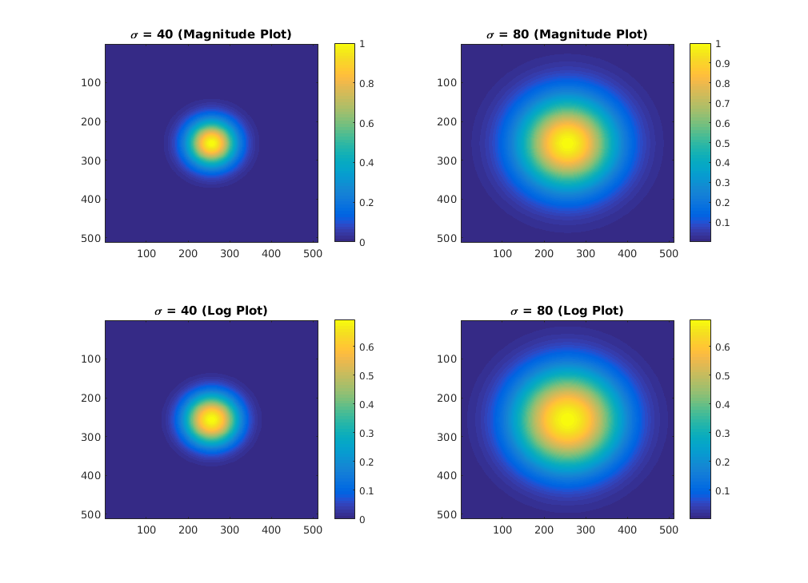
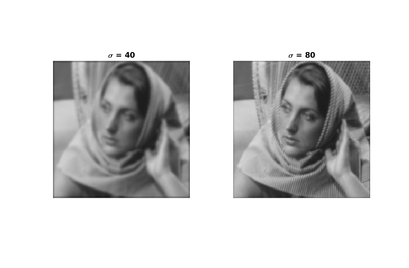

Q4. Filtering in Frequency Domain
Author: Dhruv Ilesh Shah, Dhanvi Sreenivasan and Bhavesh Thakkar
Contents
Ideal Low-Pass Filter
function [ filt ] = get_idealfilt( l, D ) % This function generates an ideal LPF of size (h, w) and cut-off frequency D filt = zeros(l, l); h = fspecial('disk', D); h = h / max(max(h)); h = (h==1); filt(l/2-D:l/2+D, l/2-D:l/2+D) = h; end
img = im2double(imread('../data/barbara256.png')); h = size(img, 1); imgpad = padarray(img, [h/2, h/2], 0, 'both'); Fimg = fft2(imgpad); Fimg_shifted = fftshift(Fimg); filt_sq_40 = get_idealfilt(h*2, 40); filt_sq_80 = get_idealfilt(h*2, 80); figure('name', 'Visualising the Ideal LPF', 'Position', [100 100 1000 700]) subplot(2, 2, 1), imshow(filt_sq_40) title('D = 40 (Magnitude Plot)') subplot(2, 2, 2), imshow(filt_sq_80) title('D = 80 (Magnitude Plot)') subplot(2, 2, 3), imshow(log(abs(filt_sq_40) + 1)) title('D = 40 (Log Plot)') subplot(2, 2, 4), imshow(log(abs(filt_sq_80) + 1)) title('D = 80 (Log Plot)')

Ideal LPF on Barbara
% For cut-off at 40 pixels, we have img_rec_pad40 = ifft2(ifftshift(Fimg_shifted.*filt_sq_40)); img_rec_40 = real(img_rec_pad40(h/2+1:3*h/2, h/2+1:3*h/2)); % For cut-off at 80 pixels, we have img_rec_pad80 = ifft2(ifftshift(Fimg_shifted.*filt_sq_80)); img_rec_80 = real(img_rec_pad80(h/2+1:3*h/2, h/2+1:3*h/2)); figure('name', 'Ideal LPF on Barbara', 'Position', [100, 100, 800, 500]) subplot(1, 2, 1), imshow(img_rec_40) title('D = 40') subplot(1, 2, 2), imshow(img_rec_80) title('D = 80')

Gaussian Low-Pass Filter
function [ filt ] = get_gaussfilt( h, sigma ) % This function generates a Gaussian filter of size h and standard % deviation sigma, in pixels filt = fspecial('gaussian', h, sigma); filt = filt / max(max(filt)); end
filt_gauss_40 = get_gaussfilt(h*2, 40); filt_gauss_80 = get_gaussfilt(h*2, 80); figure('name', 'Visualising the Gaussian LPF', 'Position', [100 100 1000 700]) subplot(2, 2, 1), imagesc(filt_gauss_40) colorbar; title('\sigma = 40 (Magnitude Plot)') subplot(2, 2, 2), imagesc(filt_gauss_80) title('\sigma = 80 (Magnitude Plot)') colorbar; subplot(2, 2, 3), imagesc(log(filt_gauss_40 + 1)) title('\sigma = 40 (Log Plot)') colorbar; subplot(2, 2, 4), imagesc(log(filt_gauss_80 + 1)) title('\sigma = 80 (Log Plot)') colorbar;
Gaussian LPF on Barbara
% For cut-off at 40 pixels, we have img_rec_pad40 = ifft2(ifftshift(Fimg_shifted.*filt_gauss_40)); img_rec_40 = real(img_rec_pad40(h/2+1:3*h/2, h/2+1:3*h/2)); % For cut-off at 80 pixels, we have img_rec_pad80 = ifft2(ifftshift(Fimg_shifted.*filt_gauss_80)); img_rec_80 = real(img_rec_pad80(h/2+1:3*h/2, h/2+1:3*h/2)); figure('name', 'Gaussian LPF on Barbara', 'Position', [100, 100, 800, 500]) subplot(1, 2, 1), imshow(img_rec_40) title('\sigma = 40') subplot(1, 2, 2), imshow(img_rec_80) title('\sigma = 80')
Comments
Comparing images from the same type of filter, we see that a small filter size of 40 causes excessive blurring-type effect, as compared to the ones with 80. This is because a smaller \sigma in Gaussian or width in ideal would allow fewer frequencies to pass. Since the image given contains significant contribution from higher frequencies, the output has lost a lot of information. Another notable difference, when comparing across the filter types, is the presence of ringing artifacts arising from the ideal filter. These can be avoided by using a smoother filter like the Gaussian, and evidently, the output of the Gaussian LPF is much cleanear.